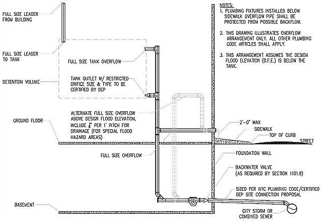
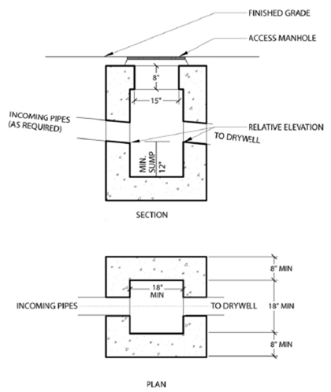
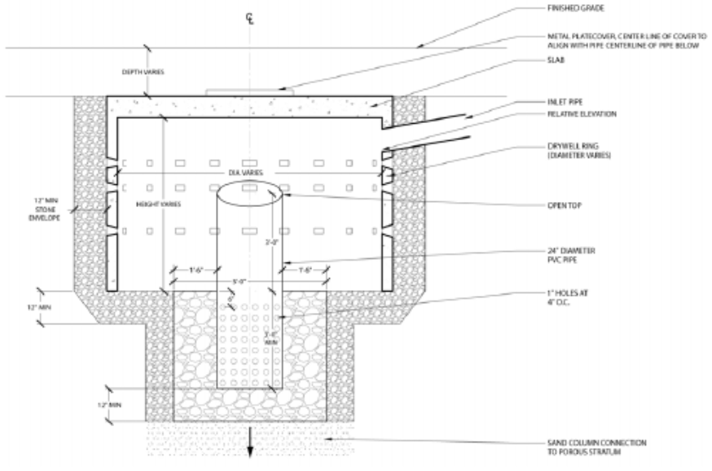

The provisions of this chapter shall govern the materials, design, construction and installation of storm drainage. Storm water discharge shall be in accordance with Department of Environmental Protection requirements. Extension requirements from the public storm or combined sewer to the building sewer shall be determined by the Department of Environmental Protection.
1101.2 Where required.
All roofs, paved areas, yards, courts and courtyards shall drain into a separate storm sewer system, or a combined sewer system, or to a place of disposal approved by the commissioner and in accordance with the requirements of the Department of Environmental Protection. An approved system for beneficial collection and use of storm water may be installed, in which case overflow from such a system shall be discharged to a safe location subject to the approval of the commissioner and the Department of Environmental Protection. See Section 107.6.2 of this code for required construction documents relating to provisions for discharge for stormwater runoff.
1101.2.1 Increases in existing impervious surfaces.
Whenever impervious surfaces on the lot are increased, such impervious surfaces shall drain into a storm sewer system, or a combined sewer system, or to an approved place of disposal.
Exception: An existing one- or two-family dwelling where the area of a proposed horizontal building enlargement plus any proposed increase in impervious surfaces in total is less than or equal to 200 square feet (19 m2). In such cases, the storm water discharge may be accommodated by existing facilities. For the purposes of this exception, the 200 square feet (19 m2) shall include all enlargements and increases cumulatively after July 1, 2008.
1101.2.2 Availability of public storm or combined sewer.
The determination as to whether a public storm sewer or public combined sewer is available to a building shall be made in accordance with applicable requirements of the Department of Environmental Protection.
1101.2.3 Feasibility of connecting to an available public storm or combined sewer.
The determination as to whether connection to an available public storm sewer or combined public sewer is feasible shall be made in accordance with applicable requirements of the Department of Environmental Protection.
1101.2.4 Extensions of public storm or combined sewers.
Extensions of public storm or combined sewers shall be made in accordance with the rules of the Department of Environmental Protection.
1101.3 Prohibited drainage.
Storm water shall not be drained into sewers intended for sewage only.
1101.4 Tests.
The conductors and the building storm drainshall be tested in accordance with Section 312.
1101.5 Change in size.
The size of a drainage pipe shall not be reduced in the direction of flow.
Exception: Drainage pipe that is part of an approved detention or retention system.
1101.5.1 Detention systems.
Where a detention system is provided, the pipe leaving the detention tank shall be permitted to be reduced to the flow allowed by the Department of Environmental Protection, provided, however, that an emergency overflow shall be provided to protect the building from internal flooding.
1101.5.2 Detention and retention tanks.
Detention and retention tanks located within buildings in flood hazard areas shall be located above the design flood elevation or shall be designed and constructed to withstand the static pressure conditions the system will experience in the event of a flood condition.
1101.5.2.1 Emergency overflow.
Emergency overflow piping shall equal the full size of the incoming storm water flow. Emergency overflows and vent terminations for buildings located in flood hazard areas shall be located above the design flood elevation. Such emergency overflow shall discharge the overflow outside of the building into either of the following locations:
1. The tax lot; or
2. The public sewer, provided that the overflow piping is provided with a vent, of the same diameter as the overflow piping, that terminates on the front wall of the building facing the street and no more than 2 feet (610 mm) above the sidewalk See Figures 1101.5.2.1(1), 1101.5.2.1(2) and 1101.5.2.1(3).

Figure 1101.5.2.1(1) Detention Volume & Tank Above Grade (Within Building)
Figure 1101.5.2.1(3) Detention Volume & Tank Below Grade (Within Building)
1101.6 Fittings and connections.
All connections and changes in direction of the storm drainage system shall be made with approved drainage-type fittings in accordance with Table 706.3. The fittings shall not obstruct or retard flow in the system.
1101.7 Roof design.
Roofs shall be designed for the maximum possible depth of water that will pond thereon as determined by the relative levels of roof deck and overflow weirs, scuppers, edges or serviceable drains in combination with the deflected structural elements. In determining the maximum possible depth of water, all primary roof drainage means shall be assumed to be blocked. The maximum possible depth of water on the roof shall include the height of the water required above the inlet of the secondary roof drainage means to achieve the required flow rate of the secondary drainage means to accommodate the design rainfall rate as required by Section 1106.
1101.8 Cleanouts required.
Cleanouts shall be installed in the storm drainage system and shall comply with the provisions of this code for sanitary drainage pipe cleanouts.
Exception: Subsurface drainage system.
1101.9 Backwater valves.
Storm drainage systems shall be provided with backwater valves as required for sanitary drainage systems in accordance with Section 715.
1101.9.1 Backwater valves in flood hazard areas.
Backwater valves for all buildings located in flood hazard areas shall be installed in storm drainage systems in accordance with the requirements of this code and the additional requirements of Section 7.3.4 of ASCE 24 as modified by Appendix G of the New York City Building Code.
1101.10 Plastic pipe.
Plastic piping and fittings shall not be used.
Exceptions:
1. Plastic piping and fittings may be used in residential buildings five stories or less in height.
2. Corrugated polyethylene and corrugated polypropylene piping and fittings, with a diameter of 12 inches (305 mm) or more may be used in connection with any type of building for underground yard drainage and storm water piping when used outside of the foundation wall of the building and not connecting to any piping system from the interior of the building.
1101.11 Cured-in-place pipe.
Cured-in-place pipe (CIPP) and epoxy spray pipe lining systems shall not be used.
1101.12 Site grading.
Except as otherwise permitted by this code, no person shall perform site grading or land contour work, as defined in Section 19-137 of the Administrative Code, that would cause storm water to flow across sidewalks or onto an adjacent property. Site grading or land contour work performed on the site of a covered development project shall comply with the rules of the Department of Environmental Protection and this code.
Section PC 1102: Materials
1102.1 General.
The materials and methods utilized for the construction and installation of storm drainage systems shall comply with this section and the applicable provisions of Chapter 7.
1102.2 Storm drainage conductors and leaders.
Storm drainage conductors and leaders shall conform to Sections 1102.2.1 and 1102.2.2.
1102.2.1 Inside storm drainage conductors.
Inside storm drainage conductors installed above ground shall conform to one of the standards listed in Table 702.1.
1102.2.2 Exterior storm drainage leaders.
Exterior storm drainage leaders installed above ground shall conform to one of the standards listed in Table 702.1.
Exception: Exterior storm drainage leaders installed above ground for buildings in occupancy Group R- 3 and bulkheads draining to other roof surfaces.
1102.3 Underground building storm drain pipe.
Underground building storm drainpipe shall conform to one of the standards listed in Table 702.2.
1102.4 Building storm sewer pipe.
Building storm sewerpipe shall conform to one of the standards listed in Table 1102.4.
Table 1102.4 Building Storm Sewer Pipe
Material
Standard
Material
Standard
Cast-iron pipe
ASTM A 74; ASTM A 888; CISPI 301
Chlorinated polyvinyl chloride (CPVC) plastic b
ASTM F 437; ASTM F 438; ASTM F 439
Concrete pipe
ASTM C 14; ASTM C 76; CSA A257.1M; CSA A257.2M
Copper or copper-alloy tubing (Type K or L)
ASTM B 75; ASTM B 88; ASTM B 251
Ductile-iron pipe
AWWA C151
Galvanized steel pipe
ASTM A 53; ASTM A 123
High density polyethylene pipe (HDPE) a
ASTM D 3350
Polyvinyl chloride (PVC) plastic pipe (Type DWV, SDR26, SDR35, SDR41, PS50 or PS100) b
ASTM D 2665; ASTM D 3034; ASTM F 891; CSA B182.4; CSA B181.2; CSA B182.2
Stainless steel drainage systems, Type 316L
ASME A112.3.1
Vitrified clay pipe
ASTM C 4; ASTM C 700
a. Approved plastic sewer for piping 12 inches and larger in accordance with Section 1101.10, Exception 2.
b. Limited to residential buildings five stories or less in height.
1102.5 Subsoil drain pipe.
Subsoil drains shall be open jointed, horizontally split or perforated pipe conforming to one of the standards listed in Table 1102.5.
Table 1102.5 Subsoil Drain Pipe
Material
Standard
Material
Standard
Cast-iron pipe
ASTM A 74; ASTM A 888; CISPI 301
Polyethylene (PE) plastic pipe
ASTM F 405; CSA B182.1; CSA B182.6; CSA B182.8
Polypropylene (PP) plastic pipe
ASTM F 2764; ASTM F 3219
Polyvinyl chloride (PVC) Plastic pipe (type sewer pipe, SDR35, PS25, PS50 or PS100) a
ASTM D 2729; ASTM D 3034; ASTM F 891; CSA B182.2; CSA B182.4
Porous concrete pipe
ASTM C 654
Stainless steel drainage systems, Type 316L
ASME A112.3.1
Vitrified clay pipe
ASTM C 4; ASTM C 700
a. Limited to residential buildings five stories or less in height.
1102.6 Roof drains.
Roof drains shall conform to ASME A112.6.4 or ASME A112.3.1.
1102.7 Fittings.
Pipe fittings shall be approved for installation with the piping material installed, and shall conform to the respective pipe standards or one of the standards listed in Table 1102.7. The fittings shall not have ledges, shoulders or reductions capable of retarding or obstructing flow in the piping. Threaded drainage pipe fittings shall be of the recessed drainage type.
Table 1102.7 Pipe Fittings
Material
Standard
Material
Standard
Acrylonitrile butadiene styrene (ABS) plastic pipe in IPS diameters a
ASTM D 2661; ASTM F 628; CSA B181.1
Acrylonitrile butadiene styrene (ABS) plastic pipe in sewer and drain diameters
ASTM D 2751
Brass
ASTM B 62
Cast-iron
ASME B16.4; ASME B16.12; ASTM A 888; CISPI 301; ASTM A 74
Chlorinated polyvinyl chloride (CPVC) plastic a
ASTM F 437; ASTM F 438; ASTM F 439
Copper or copper-alloy tubing (Type K, L)
ASTM B 75; ASTM B 88; ASTM B 251
Ductile iron
AWWA C110
Galvanized steel
ASTM A 153; ASME B16.3
High-density polyethylene (HDPE)
ASTM D 3350
Malleable iron
ASME B16.3
Polyethylene (PE) plastic pipe a
ASTM F 2306 / F 2306M
Polyolefin a
CSA B181.3; ASTM F 1412; ASTM D 2657
Polypropylene (PP) plastic pipe a
ASTM F 2764; ASTM F 3219
Polyvinyl chloride (PVC) plastic a
ASTM D 2464; ASTM D 2466; ASTM D 2467; CSA B137.2; ASTM D 2665; ASTM D 3311; ASTM F 1866
Polyvinyl chloride (PVC) plastic pipe in sewer and drain diameters a
ASTM D 3034
Polyvinylidene fluoride (PVDF) plastic pipe a
ASTM F 1673; CSA B181.3
Stainless steel drainage systems, Type 316L
ASME A112.3.1
Vitrified clay
ASTM C 425
a. Limited to residential buildings five stories or less in height.
Section PC 1103: Traps
1103.1 Main trap.
Leaders and storm drains connected to a combined sewer shall be trapped. Individual storm water traps shall be installed on the storm water drain branch serving each conductor, or a single trap shall be installed in the main storm drain just before its connection with the combined building sewer or the public sewer. A hooded catch basin located within the property line shall be the equivalent of a building-house trap for the connection to a public sewer.
1103.2 Material.
Storm water traps shall be of an approved material in accordance with Table 1102.7.
1103.3 Size.
Traps for individual conductors shall be the same size as the horizontal drain to which they are connected.
1103.4 Cleanout.
An accessible cleanout shall be installed on the building side of the trap.
Section PC 1104: Conductors and Connections
1104.1 Prohibited use.
Conductor pipes shall not be used as soil, waste or vent pipes, and soil, waste or vent pipes shall not be used as conductors.
1104.2 Floor drains.
Floor drains shall not be connected to a storm drain.
1104.3 Combining storm with sanitary drainage.
The sanitary and storm drainage systems of a structure shall be entirely separate except for minor modifications to existing buildings having combined systems. Where a combined building drain is utilized, the building storm drain shall be connected in the same horizontal plane through a single-wye fitting to the building drain at least 10 feet (3048 mm) downstream from any soil stack. If a separate city storm sewer is not available, building sanitary drains shall be separate and shall only be permitted to connect to a common building combined drain downstream of building (house) trap.
1104.4 Clear water drains.
Drains carrying clear water, i.e., air-conditioning drips, pump drips, cooling water, etc., may discharge into the storm water drainage system through an indirect waste connection discharging into a trapped funnel or raised lip floor drain.
Exception: Cooling tower blow-down shall discharge into the sanitary drainage system.
1104.5 Parking garage floor drains.
Floor drains provided in open or enclosed parking garages shall drain to the storm drainage system.
Exception: Where the storm drainage system discharges to a dedicated storm sewer, parking garage floor drains shall be connected to the sanitary drainage system.
Section PC 1105: Roof Drains
1105.1 General.
Roof drains shall be installed in accordance with the manufacturer's instructions. The inside opening for the roof drain shall not be obstructed by the roofing membrane material.
1105.2 Roof drain flow rate.
The published roof drain flow rate, based on the head of water above the roof drain, shall be used to size the storm drainage system in accordance with Section 1106. The flow rate used for sizing the storm drainage piping shall be based on the maximum anticipated ponding at the roof drain.
Section PC 1106: Size of Conductors, Leaders and Storm Drains
1106.1 General.
The size of the vertical conductors and leaders, gutters, building storm drains, building storm sewers and any horizontal branches of such drains or sewersshall be based on the 100-year hourly rainfall rate of 3 inches (76 mm) per hour. Sizing for secondary and combined primary and secondary conductors, leaders and drains shall be in accordance with Section 1108.
(Am. L.L. 2023/077, 6/11/2023, eff. 6/11/2023)
Editor's note: For related unconsolidated provisions, see Appendix A at L.L. 2023/077.
1106.2 Size of storm drain piping.
Vertical and horizontal storm drain piping shall be sized based on the flow rate through the roof drain. The flow rate in storm drain piping shall not exceed that specified in Table 1106.2.
Table 1106.2 Storm Drain Pipe Sizing
Pipe Size (inches)
Capacity (gpm)
Vertical Drain
Slope of Horizontal Drain
1/16 inch per foot
1/8 inch per foot
1/4 inch per foot
1/2 inch per foot
Pipe Size (inches)
Capacity (gpm)
Vertical Drain
Slope of Horizontal Drain
1/16 inch per foot
1/8 inch per foot
1/4 inch per foot
1/2 inch per foot
2
34
15
22
31
44
3
87
39
55
79
111
4
180
81
115
163
231
5
311
117
165
234
331
6
538
243
344
487
689
8
1,117
505
714
1,010
1,429
10
2,050
927
1,311
1,855
2,623
12
3,272
1,480
2,093
2,960
4,187
14
4,204
1,312
1,856
2,621
3,713
15
5,543
2,508
3,546
5,016
7,093
16
5,543
2,508
3,546
5,016
7,093
18
8.218
3,100
4,386
6,192
8,773
1106.2.1 Values for continuous flow.
Where there is a continuous or semicontinuous discharge into the building storm drain or building storm sewer, such as from a pump, ejector, air conditioning plant or similar device, each gallon per minute of such discharge shall be computed as being equivalent to 32 square feet (2.97 m2) of roof area, based on a rainfall rate of 3 inches (75 mm) per hour.
1106.3 Vertical leader sizing.
Vertical leaders shall be sized based on the flow rate from horizontal gutters or the maximum flow rate through roof drains. The flow rate through vertical leaders shall not exceed that specified in Table 1106.3.
Table 1106.3 Vertical Leader Sizing
Size of Leader (inches)
Capacity (gpm)
Size of Leader (inches)
Capacity (gpm)
2
30
2 × 2
30
1 1/2 × 2 1/2
30
2 1/2
54
2 1/2 × 2 1/2
54
3
92
2 × 4
92
2 1/2 × 3
92
4
192
3 × 4 1/4
192
3 1/2 × 4
192
5
360
4 × 5
360
4 1/2 × 4 1/2
360
6
563
5 × 6
563
5 1/2 × 5 1/2
563
8
1208
6 × 8
1208
For SI: 1 inch = 25.4 mm, 1 gallon per minute = 3.785 L/m.
1106.4 Vertical walls.
In sizing roof drains and storm drainage piping, one-fourth of the area of any vertical wall that diverts rainwater to the roof or the setback roof of a building shall be added to the projected roof area for inclusion in calculating the required size of vertical conductors, leaders and horizontal storm drainage piping.
Exceptions:
1. Where vertical conductors or leaders and downstream piping has been sized for secondary roof drainage in accordance with Section 1108, the contribution from vertical walls need not be added to the projected roof area.
2. Section 1106.4 shall not be applicable to vertical walls fronting a public right-of-way.
1106.5 Parapet wall scupper location.
Parapet wall roof drainage scupper and overflow scupper location shall comply with the requirements of Section 1503.4 of the New York City Building Code.
1106.6 Size of roof gutters.
Horizontal gutters shall be sized based on the flow rate from the roof surface. The flow rate in horizontal gutters shall not exceed that specified in Table 1106.6.
Table 1106.6 Horizontal Gutter Sizing
Gutter Dimensions a (inches)
Slope (inch per foot)
Capacity (gpm)
Gutter Dimensions a (inches)
Slope (inch per foot)
Capacity (gpm)
1 1/2 × 2 1/2
1/4
26
1 1/2 × 2 1/2
1/2
40
4
1/8
39
2 1/4 × 3
1/4
55
2 1/4 × 3
1/2
87
5
1/8
74
4 × 2 1/2
1/4
106
3 × 3 1/2
1/2
156
6
1/8
110
3 × 5
1/4
157
3 × 5
1/2
225
8
1/16
172
8
1/8
247
4 1/2 × 6
1/4
348
4 1/2 × 6
1/2
494
10
1/16
331
10
1/8
472
5 × 8
1/4
651
4 × 10
1/2
1055
For SI: 1 inch = 25.4 mm, 1 foot = 304.8 mm, 1 gallon per minute = 3.785 L/m, 1 inch per foot = 83.3 mm/m.
a. Dimensions are width by depth for rectangular shapes. Single dimensions are diameters of a semicircle.
Section PC 1107: Siphonic Roof Drainage Systems
1107.1 General.
Siphonic roof drains and drainage systems shall be designed in accordance with ASME A112.6.9 and ASPE 45.
Section PC 1108: Secondary (Emergency) Roof Drains
1108.1 Secondary (emergency overflow) drains or scuppers.
Where roof drains are required, secondary (emergency overflow) roof drains or scuppers shall be provided where the roof perimeter construction extends above the roof in such a manner that water will be entrapped if the primary drains allow buildup for any reason. The inlet elevation of secondary (overflow) drains and the invert elevation of overflow scuppers should be not less than 2 inches (51 mm) or more than 4 inches (102 mm) above the low point of the (adjacent to) roof surface unless a safer water depth loading, including the required hydraulic head to maintain required flow rate out of the overflow drainage system that has been determined by the structural design. Where primary and secondary roof drains are manufactured as a single assembly, the inlet and outlet for each drain shall be independent.
1108.2 Separate systems required.
Secondary roof drain systems shall have the end point of discharge separate from the primary system. Discharge shall be above grade, in a location that would normally be observed by the building occupants or maintenance personnel.
Exception: Secondary drainage system may tie into the primary drainage system in the vertical conductors where separate systems are impractical or to prevent water from flowing over sidewalk or pedestrian walkways.
1108.3 Sizing of secondary drains.
Secondary (emergency) roof drain systems shall be sized in accordance with Section 1106 based on the rainfall rate of 3 inches (76 mm) per hour. Scuppers shall be sized to prevent the depth of ponding water from exceeding that for which the roof was designed as determined by Section 1101.7. Scuppers shall have an opening dimension of not less than 4 inches (102 mm). The flow through the primary system shall not be considered when sizing the secondary roof drain system.
Exception: Where secondary drainage systems tie into primary drainage systems, the combined primary and secondary system shall be sized based on their combined rainfall rate of 6 inches (152 mm) per hour.
Section PC 1109: Combined Sanitary and Storm System
1109.1 Size of combined drains and sewers.
Combined sanitary and storm sewers are not permitted in new installations. All sanitary and storm systems shall be separate up to a point located in accordance with the applicable requirements of the Department of Environmental Protection. With respect to repair of combined systems installed prior to the effective date of this section, the size of a combination sanitary and storm drain or sewer shall be computed in accordance with the method in Section 1106. The fixture units shall be converted into an equivalent projected roof or paved area. Where the total fixture load on the combined drain is less than or equal to 256 fixture units, the equivalent drainage area in horizontal projection shall be taken as 1,333 square feet (124 m2). Where the total fixture load exceeds 256 fixture units, each additional fixture unit shall be considered the equivalent of 5.2 square feet (0.48 m2) of drainage area. These values are based on a rainfall rate of 3 inch (75 mm) per hour.
Section PC 1110: Controlled Flow Roof Drain Systems
1110.1 General.
The roof of a structure shall be designed for the storage of water where the storm drainage system is engineered for controlled flow. The controlled flow roof drain system shall be an engineered system in accordance with this section and Section 28-113.2.2 of the Administrative Code. The controlled flow system shall be designed based on the design rainfall rate in accordance with Section 1106.1.
1110.2 Control devices.
The control devices shall be installed so that the rate of discharge of water per minute shall not exceed the values for controlled flow as allowed by the Department of Environmental Protection.
1110.3 Installation.
Runoff control shall be by control devices. Control devices shall be protected by strainers.
1110.4 Minimum number of roof drains.
Not less than two roof drains shall be installed in roof areas 10,000 square feet (929 m2) or less and not less than four roof drains shall be installed in roofs over 10,000 square feet (929 m2) in area.
Section PC 1111: Subsoil Drains
1111.1 Subsoil drains.
Subsoil drains carrying groundwater shall be open-jointed, horizontally split or perforated pipe conforming to one of the standards listed in Table 1102.5. Such drains shall not be less than 4 inches (102 mm) in diameter. Where the building is subject to backwater, the subsoil drain shall be protected by an accessibly located backwater valve. Subsoil drainage discharged into a public sewer shall be approved by the Department of Environmental Protection. The subsoil drains shall discharge into a readily accessible silt and sand interceptor before being connected into the gravity drainage or sump system. Subsoil drainage shall discharge to a trapped area drain, sump, dry well or approved location above ground. The subsoil sump shall not be required to have either a gas-tight cover or a vent. The sump and pumping system shall comply with Section 1113.1.
Section PC 1112: Building Subdrains
1112.1 Building subdrains.
Building subdrains located below the public sewer level shall discharge into a sump or receiving tank, the contents of which shall be automatically lifted and discharged into the drainage system as required for building sumps. The sump and pumping equipment shall comply with Section 1113.1.
Section PC 1113: Sumps and Pumping Systems
1113.1 Pumping system.
The sump pump, pit and discharge piping shall conform to Sections 1113.1.1 through 1113.1.4.
1113.1.1 Pump capacity and head.
The sump pump shall be of a capacity and head appropriate to anticipated use requirements.
1113.1.2 Sump pit.
The sump pit shall be not less than 18 inches (457 mm) in diameter and not less than 24 inches (610 mm) in depth, unless otherwise approved. The pit shall be accessible and located such that all drainage flows into the pit by gravity. The sump pit shall be constructed of tile, steel, plastic, cast iron, concrete or other approved material, with a removable cover adequate to support anticipated loads in the area of use. The pit floor shall be solid and provide permanent support for the pump.
1113.1.3 Electrical.
Electrical service outlets, when required, shall meet the requirements of the New York City Electrical Code.
1113.1.4 Piping.
Discharge piping shall meet the requirements of Section 1102.2, 1102.3 or 1102.4 and shall include a gate valve and a full flow check valve. Pipe and fittings shall be the same size as, or larger than, the pump discharge tapping.
Exception: In one- and two-family dwellings, only a check valve shall be required, located on the discharge piping from the pump or ejector.
Section PC 1114: Private On-Site Stormwater Disposal Systems
1114.1 General.
Private on-site stormwater disposal systems shall comply with the provisions of Section 1114.
1114.1.1 When permitted.
The use of private on-site stormwater disposal systems shall be permitted only in the following circumstances:
1. Pursuant to a certification issued by the New York City Department of Environmental Protection that a public storm or combined sewer is not available or that connection thereto is not feasible in accordance with Section 107.6.2.2, Item 1(i);
2. Pursuant to a certification submitted by the applicant to the New York City Department of Environmental Protection that a public storm or combined sewer is not available or that connection thereto is not feasible, in such cases where the availability and feasibility of connection to a public storm or combined sewer are allowed to be certified by the applicant pursuant to rules of the New York City Department of Environmental Protection, in accordance with Section 107.6.2.2, Item 1(ii);
3. Pursuant to a certification submitted by the applicant to the New York City Department of Environmental Protection authorizing on-site stormwater disposal in accordance with Section 107.6.2.1, Item 1;
4. For enlargements less than 1,000 square feet (93 m2) in accordance with Section 107.6.2, Exception 2;
5. For outdoor drinking fountains; or
6. The disposal of foundation drainage as described in Section 1807.4.3 of the New York City Building Code.
1114.1.2 Acceptable systems.
Acceptable on-site stormwater disposal systems shall include:
1. Drywells;
2. Gravel beds;
3. Perforated pipe;
4. Stormwater chambers that facilitate infiltration; and
5. Alternate method of on-site disposal as approved by the department and the New York City Department of Environmental Protection.
1114.1.3 Minimum setbacks.
On-site stormwater disposal systems shall be located at least 5 feet (1524 mm) from all lot lines except where the lot line abuts a public right of way and 10 feet (3048 mm) from all foundations or walls existing on the date of application for a building permit or proposed under the application to construct the on-site stormwater disposal system. Systems shall be located 20 feet (6096 mm) from disposal fields and 20 feet (6096 mm) from seepage pits. On-site stormwater disposal systems shall not be located within the building footprint.
1114.2 Field investigation.
The size of an on-site stormwater disposal system shall be predicated on a field investigation performed prior to construction document approval that is performed at the site of a proposed on-site stormwater disposal system to assess the suitability of the soil and site. The investigation shall conform to Sections 1114.2.1 and 1114.2.2 and shall occur prior to approval of construction documents for the system. The field investigation shall be subject to special inspection in accordance with Section 1704.21 of the New York City Building Code.
1114.2.1 Classification of soil based on borings and test pits.
At least one boring and one test pit shall be made at the approximate site of each proposed on-site stormwater disposal system. Soil borings and sampling procedures shall in accordance with ASTM D 1586 and ASTM D 1587, and generally accepted engineering practice. Soil and rock samples shall be classified in accordance with Section 1802.3 of the New York City Building Code.
(Am. L.L. 2023/077, 6/11/2023, eff. 6/11/2023)
Editor's note: For related unconsolidated provisions, see Appendix A at L.L. 2023/077.
1114.2.2 Soil infiltration capabilities.
The suitability of the subsurface soils must be verified in place by either a percolation test or a permeability test. Where testing determines that the infiltration rate of the subsurface soils is less than 1/2 inch (12.7 mm) per hour, private on-site stormwater disposal systems shall not be permitted. Such tests shall conform to Section 1114.2.2.1 or 1114.2.2.2, as applicable.
1114.2.2.1 Percolation tests and procedures.
The infiltration rate of subsurface soils shall be verified with a percolation test. Percolation tests shall be performed in accordance with Sections 1114.2.2.1.1 through 1114.2.2.1.3 under the supervision of a special inspection agency in accordance with Section 1704.21.1 of the New York City Building Code. At least one percolation test in each system area shall be conducted. The holes shall be spaced uniformly in relation to the bottom depth of the proposed absorption system. More percolation tests shall be made where necessary, depending on system design. The results of the percolation tests shall be filed with the department stating the suitability of the site and the capacity of the subsoil for the proposed use.
1114.2.2.1.1 Percolation test hole.
The test hole shall be dug or bored. The test hole shall have vertical sides and a horizontal dimension of 4 inches to 8 inches (102 mm to 203 mm). The bottom and sides of the hole shall be scratched with a sharp-pointed instrument to expose the natural soil. All loose material shall be removed from the hole and the bottom shall be covered with 2 inches (51 mm) of gravel or coarse sand.
1114.2.2.1.2 Test procedure, sandy soils.
The hole shall be filled with clear water to a minimum of 12 inches (305 mm) above the bottom of the hole for tests in sandy soils. The time for this amount of water to seep away shall be determined, and this procedure shall be repeated if the water from the second filling of the hole seeps away in 10 minutes or less. The test shall proceed as follows: Water shall be added to a point not more than 6 inches (152 mm) above the gravel or coarse sand. Thereupon, from a fixed reference point, water levels shall be measured at 10-minute intervals for a period of 1 hour. Where 6 inches (152 mm) of water seeps away in less than 10 minutes, a shorter interval between measurements shall be used, but in no case shall the water depth exceed 6 inches (152 mm). Where 6 inches (152 mm) of water seeps away in less than 2 minutes, the test shall be stopped and a rate of less than 3 minutes per inch (7.2 s/mm) shall be reported. The final water level drop shall be used to calculate the percolation rate. Soils not meeting the above requirements shall be tested in accordance with Section 1114.2.2.1.3.
1114.2.2.1.3 Test procedure, other soils.
The hole shall be filled with clear water, and a minimum water depth of 12 inches (305 mm) shall be maintained above the bottom of the hold for a 4-hour period by refilling whenever necessary or by use of an automatic siphon. Water remaining in the hole after 4 hours shall not be removed. Thereafter, the soil shall be allowed to swell not less than 16 hours or more than 30 hours. Immediately after the soil swelling period, the measurements for determining the percolation rate shall be made as follows: Any soil sloughed into the hole shall be removed and the water level shall be adjusted to 6 inches (152 mm) above the gravel or coarse sand. Thereupon, from a fixed reference point, the water level shall be measured at 30-minute intervals for a period of 4 hours, unless two successive water level drops do not vary by more than 1/16 inch (1.59 mm). At least three water level drops shall be observed and recorded. The hole shall be filled with clear water to a point not more than 6 inches (152 mm) above the gravel or coarse sand whenever it becomes nearly empty. Adjustments of the water level shall not be made during the three measurement periods except to the limits of the last measured water level drop. When the first 6 inches (152 mm) of water seeps away in less than 30 minutes, the time interval between measurements shall be 10 minutes and the test run for 1 hour. The water depth shall not exceed 5 inches (127 mm) at any time during the measurement period. The drop that occurs during the final measurement period shall be used in calculating the percolation rate.
1114.2.2.2 Permeability tests.
Soil shall be evaluated for estimated percolation based on a permeability test performed in place, in accordance with procedures established by the New York City Department of Environmental Protection and accepted engineering practice.
1114.3 Design.
The design of on-site stormwater disposal systems shall comply with the provisions of Section 1114.3.1.
1114.3.1 Runoff rate.
The runoff rate shall be calculated using the rational method, Equation 11-1. The calculation shall incorporate the total site area with a rainfall intensity value of I = 5.95 inches per hour. The weighted runoff coefficient shall be calculated using Equation 11-2 and shall incorporate the different combinations of surfaces using the C values listed below.
Q = Cw × I × A (Equation 11-1)
where:
Q = developed flow, cubic feet per second
Cw = weighted runoff coefficient
I = the rainfall intensity value, 5.95 in/hr
A = the total site area, acres (ac)
Cw = (1/A) Σ(Ak× Ck) (Equation 11-2)
where:
Cw = weighted runoff coefficient
A = The total site area, acres (ac)
Ak = The area of each surface coverage type, acres (ac)
Ck = The runoff coefficient associated with each surface coverage type
The following C-values shall be used for calculating a site's weighted runoff coefficient:
0.95 = roof/concrete
0.85 = asphalt
0.7 = porous asphalt/concrete or permeable pavers
0.7 = green roof with four or more inches of growing media
0.65 = gravel parking lot
0.3 = undeveloped areas
0.2 = grass areas
0.2 = rain gardens, vegetated swales and other surface green infrastructure practices
(Am. L.L. 2023/077, 6/11/2023, eff. 6/11/2023)
Editor's note: For related unconsolidated provisions, see Appendix A at L.L. 2023/077.
1114.3.1.1 Storage volume.
The storage volume of an on-site stormwater disposal system shall be measured 3 feet (610 mm) above the level of the water table. The location of the water table shall be verified at the time of the field investigation conducted in accordance with Section 1114.2. Unless otherwise approved by the New York City Department of Environmental Protection, the storage volume of the on-site stormwater disposal system shall accommodate the total stormwater volume calculated in this section. The stormwater volume shall be calculated as follows:
1. Compute the runoff rate using Equations 11-1 and 11-2.
2. Calculate the outflow rate due to infiltration, in cubic feet per second, using Equation 11-3.
3. Calculate the outflow rate, in cubic feet per second per acre, of imperviousness using Equation 11-4.
4. Calculate the duration of the design storm in minutes using Equation 11-5.
5. Calculate the maximum required retention volume using Equation 11-6.
Qinf = (FAmin × isoil) / 43,200 (Equation 11-3)
where:
Qinf = outflow rate due to infiltration in cubic feet per second
FAmin = minimum footprint or surface area of the stormwater disposal system
isoil = soil infiltration rate in inches per hour
Qo = CWT × i x AT(Equation 11-4)
where:
Qo = the average outflow rate in cubic feet per second during the rainfall event
CWT = the weighted runoff coefficient for the tributary area
i = the average rainfall intensity in inches per hour for the event
AT = the area tributary to the detention facility in acres
VV = the maximum required detention volume in cubic feet with a variable outflow
CWT = the weighted runoff coefficient for the area tributary to the detention facility
At = the area tributary to the detention facility in square feet
tV = the duration of the storm in minutes, with a 10 year return frequency, requiring the maximum detention volume with a variable outflow
QDRR = the detention facility maximum release rate in cubic feet per second
1114.4 Required components.
On-site stormwater disposal systems shall be designed to provide adequate storage, support the use at the surface, and allow for operation and required maintenance. Systems shall be constructed with all necessary components and materials required by the manufacturers specifications. Drywell design shall incorporate a grit chamber, and where required, a sand column constructed in accordance with Figures 1114.4(1) and 1114.4(2), respectively.

Figure 1114.4(1) Grit Chamber

Figure 1114.4(2) Detail of Drywell with Sand Column
1114.4.1 Grit chamber.
All drywells shall contain a grit chamber as part of the drywell system. Grit chambers shall be constructed in accordance with the following requirements:
1. Solid access cover with a minimum diameter of 15 inches (381 mm).
2. Grit chamber designed to support the maximum anticipated load.
3. Outlet invert elevation shall be a minimum of 1 inch (25 mm) lower than the lowest inlet elevation.
4. The sump shall be a minimum of 18 inches (450 mm) or two times the largest inlet pipe diameter, whichever is greater, as measured to the outlet invert elevation.
5. The interior dimensions shall be a minimum of 18 inches (450 mm) or four times the largest inlet pipe diameter whichever is greater.
1114.4.2 Reserved.
1114.5 On-site stormwater disposal system installation.
On-site stormwater disposal systems shall be installed in accordance the manufacturer's recommendations and shall conform to Sections 1114.5.1 through 1114.5.3.
1114.5.1 Support of excavation.
When an on-site stormwater disposal system installation requires an excavation deeper than 5 feet (1524 mm), the sides of the excavation shall be protected and maintained in accordance with Section 3304.4 of the New York City Building Code.
1114.5.2 Sand column installation.
Where the installation of an on-site stormwater disposal system requires the installation of a sand column, measures shall be taken to ensure the sand column is installed without contamination by impervious materials.
1114.5.3 Verification.
The department reserves the right to require a 24-hour test to verify the absorption of water in the installed on-site stormwater disposal system prior to final approval.
1114.6 Special inspection.
The installation of on-site stormwater disposal systems shall be subject to special inspection in accordance with Section 1704.21 of the New York City Building Code. Minor variations, based on actual site conditions, shall be acceptable at the discretion of the registered design professional of record.
1114.7 Maintenance.
The property owner shall maintain any on-site stormwater disposal system in proper working order in accordance with the rules of the Department of Environmental Protection.
1114.8 Signage.
Signage shall be attached to the house trap or fresh air pipe in the basement that states: AN ON-SITE STORMWATER DISPOSAL SYSTEM IS LOCATED ON THIS PROPERTY FOR STORMWATER DISPOSAL. INSPECTION AND MAINTENANCE OF THIS ON-SITE STORMWATER DISPOSAL SYSTEM IS REQUIRED BY THE RULES OF THE DEPARTMENT OF ENVIRONMENTAL PROTECTION. This signage shall depict the location of the system on the property.
A post-construction stormwater management facility that is constructed as part of a covered development project shall be designed, installed and maintained in accordance with the rules of the Department of Environmental Protection and this code.